Escritora, jornalista, romancista, contista e professora
OBRAS DE NÉLIDA PIÑON
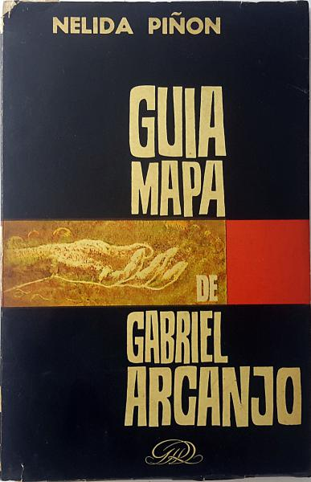
Capa da obra "Guia-mapa de Gabriel Arcanjo".
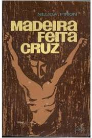
Capa da obra "Madeira feita Cruz".
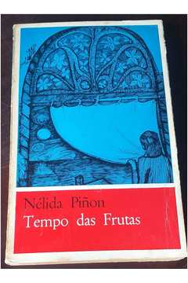
Capa da obra "Tempo das Frutas". Capa da obra "Fundador".
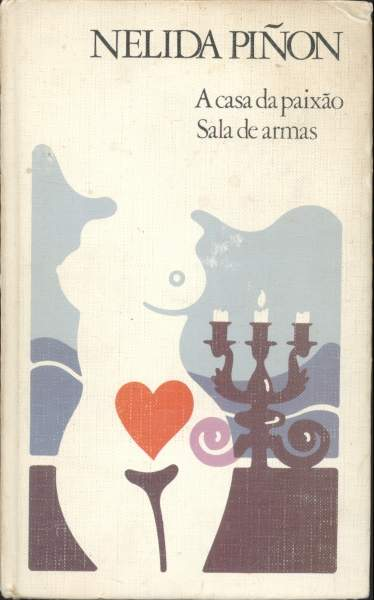
Capa da obra "A Casa da Paixão".
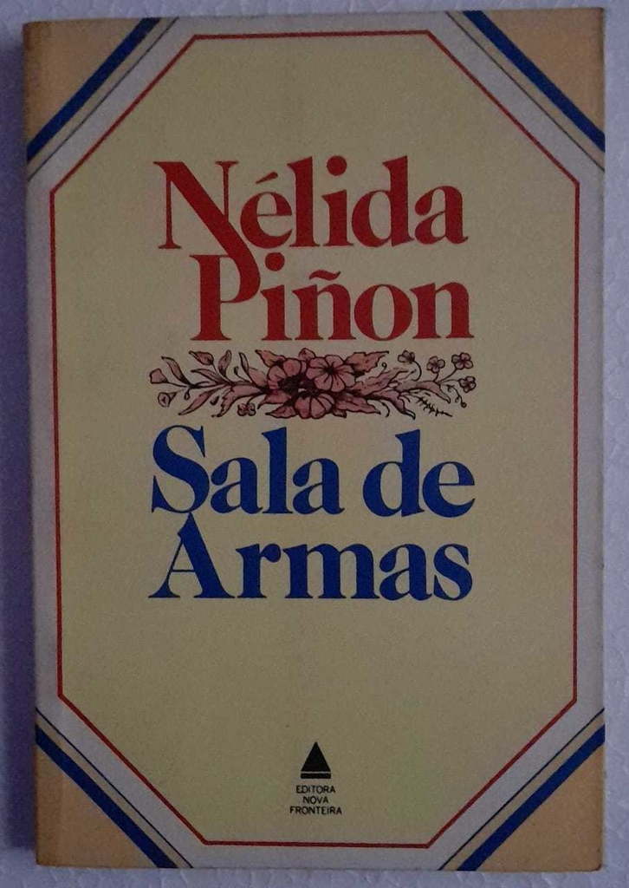
Capa da obra "Sala de Armas". Capa da obra "Tebas do meu Coração". Capa da obra "A Força do Destino".
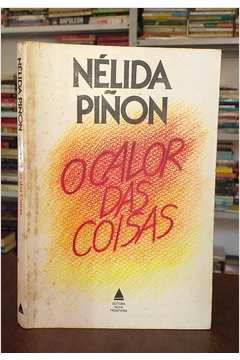
Capa da obra "O Calor das Coisas".
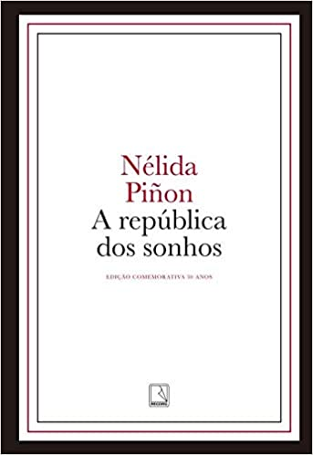
Capa da obra "A República dos Sonhos".
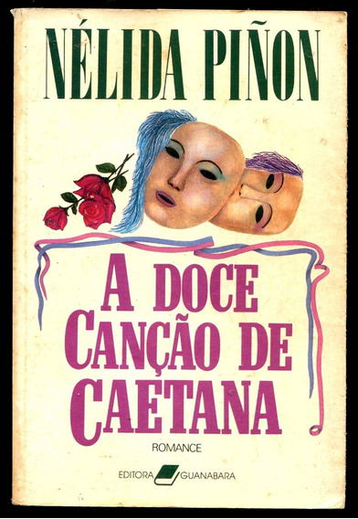
Capa da obra "A Doce Canção de Caetana".
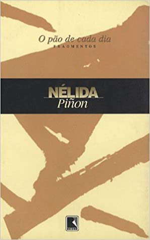
Capa da obra "O Pão de cada Dia".
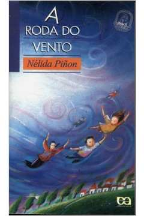
Capa da obra "A Roda do Vento".
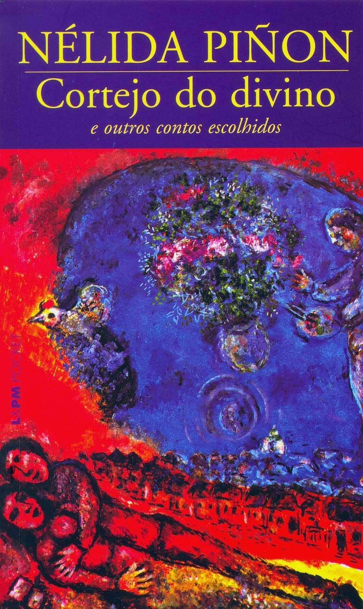
Capa da obra "Cortejo do Divino".
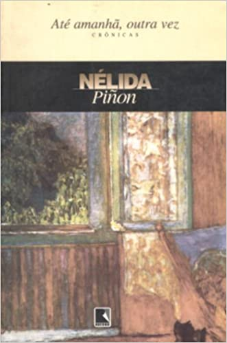
Capa da obra "Até Amanhã outra Vez".
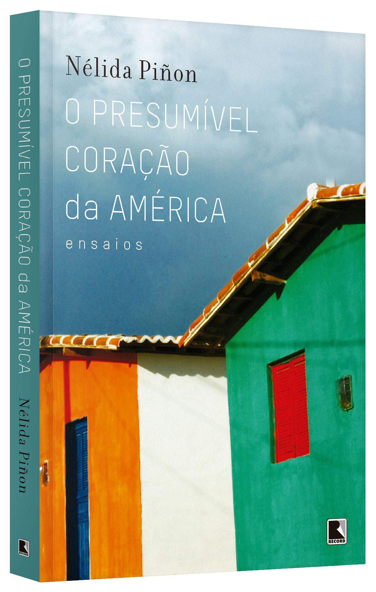
Capa da obra "O Presumível Coração da América". Capa da obra "Vozes do Deserto".
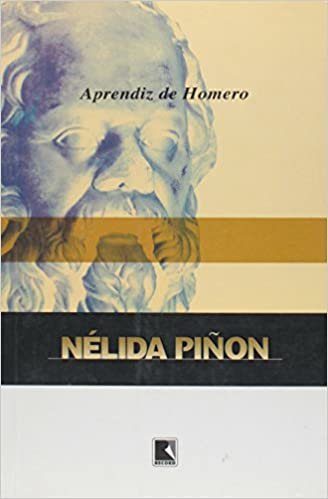
Capa da obra "Aprendiz de Homero".
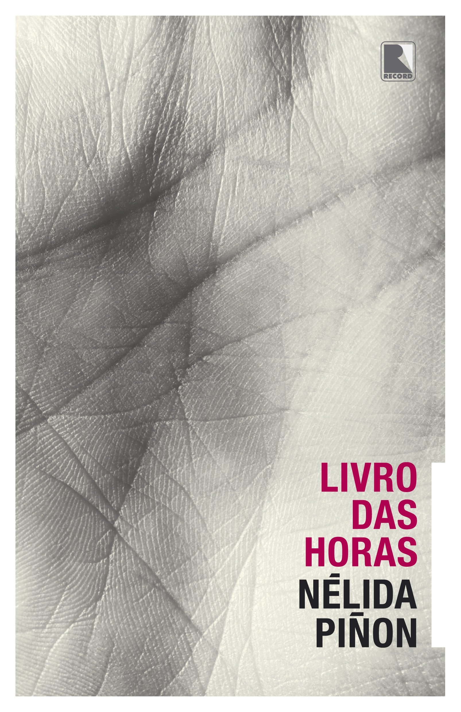
Capa da obra "Livro das Horas". Capa da obra "A Camisa do Marido".
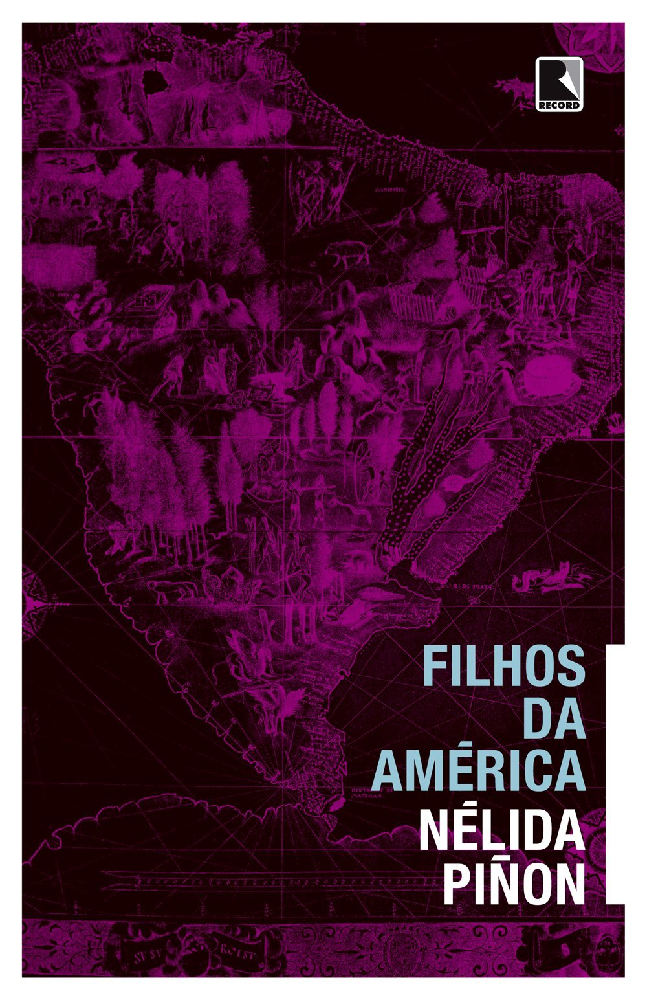
Capa da obra "Filhos da América".
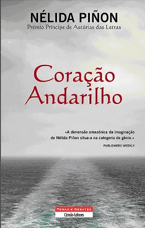
Capa da obra "Coração Andarilho".